Halo semuanya! Pada blog pertama saya, saya akan membahas mengenai cara membuat Github Pages menggunakan sistem Git.
Mungkin anda memiliki file web statis yang memuat portfolio kalian atau blog pribadi anda dan anda ingin meng-hosting web anda secara gratis agar dapat diakses oleh orang di seluruh Dunia, maka Github Pages adalah solusinya.
Github Pages merupakan layanan hosting website gratis dari Github. Seluruh file website akan di-hosting melalui GitHub, artinya apabila anda ingin melakukan perubahan anda bisa melakukannya melalui github atau langsung dari desktop melalui perintah-perintah git.
Berikut merupakan cara membuat Github Pages menggunakan sistem Git:
1. Pastikan anda telah memiliki akun Github dan sudah menginstall git pada komputer anda.
Jika anda belum memiliki akun Github, maka anda dapat membuat akun Github terlebih dahulu di https://github.com. Dan jika anda belum menginstall git pada komputer anda, maka anda dapat mengunduh lalu menginstall git di komputer anda di https://git-scm.com/downloads.
2. Buka website Github lalu login menggunakan akun anda. Setelah itu, anda buat repository baru dengan nama <username anda>.github.io seperti pada gambar di bawah.
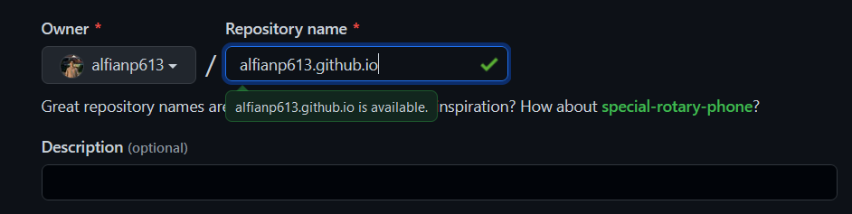
Apabila sudah, lalu klik create repository.
3. Setelah itu buka folder web anda, lalu ketik cmd di bagian path folder tersebut seperti pada gambar dan klik Enter.
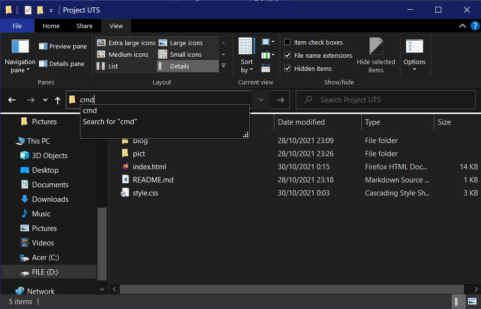
Maka, cmd akan terbuka pada path file web anda.
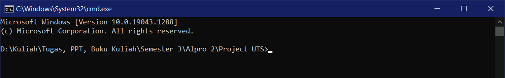
4. Ketik "git init" untuk membuat local git repository pada folder web anda.
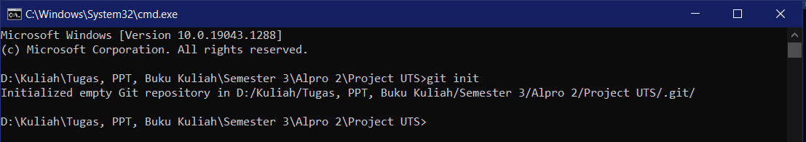
5. Ketik "git add ." untuk menambahkan semua file yang ada pada folder ke staging area.
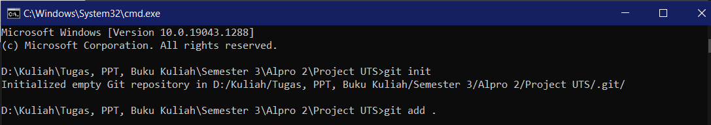
6. Ketik "git commit -m "Push to github"” untuk memindahkan file yang saat ini berada di staging area untuk masuk ke repository dan git akan mencatat perubahan yang dimasukan ke repository-nya dengan diberi pesan "Push to github".
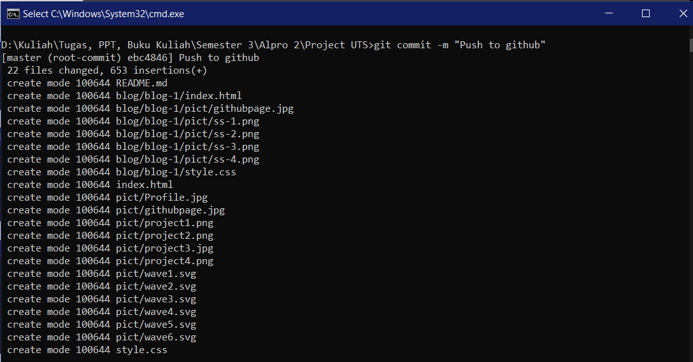
7. Ketik "git branch -M main" untuk membuat branch baru dengan nama "main".
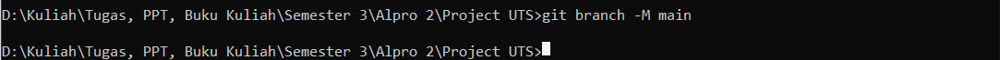
8. Ketik "git remote add origin https://github.com/alfianp613/alfianp613.github.io.git" untuk memilih target repository Github Pages yang sebelumnya sudah anda buat.
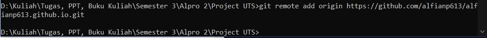
9. Ketik "git push -u origin main" untuk melakukan push local git repository ke Github repository yang sudah dibuat sebelumnya. Apabila belum pernah melakukan proses ini, maka kita akan diperintahkan untuk login ke akun Github kita terlebih dahulu untuk melakukan autentikasi.
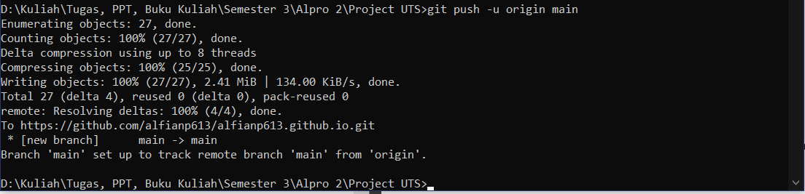
10. Setelah itu, Kembali ke Github lalu refresh browser anda pada repository yang sudah dibuat. Apabila setelah di refresh tampilannya sudah seperti pada gambar artinya local git repository kita telah berhasil di-clone ke Github repository.
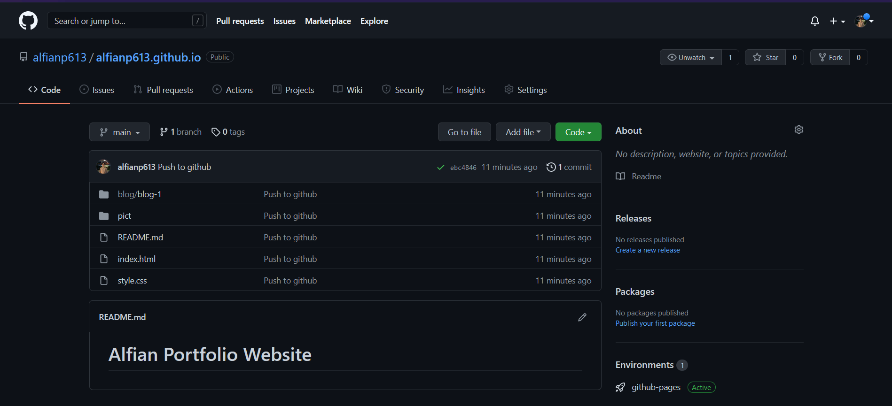
Kita bisa lihat pada halaman repository bagian kanan bawah ada tulisan Github Pages active, artinya website kita sudah dapat diakses.
11. Terakhir, cek website anda dengan alamat sama dengan nama repository-nya yaitu <username anda>.github.io di browser anda. Bisa kita lihat pada gambar di bawah bahwa websiter dapat diakses. Selamat, anda sudah mempunyai website anda sendiri.
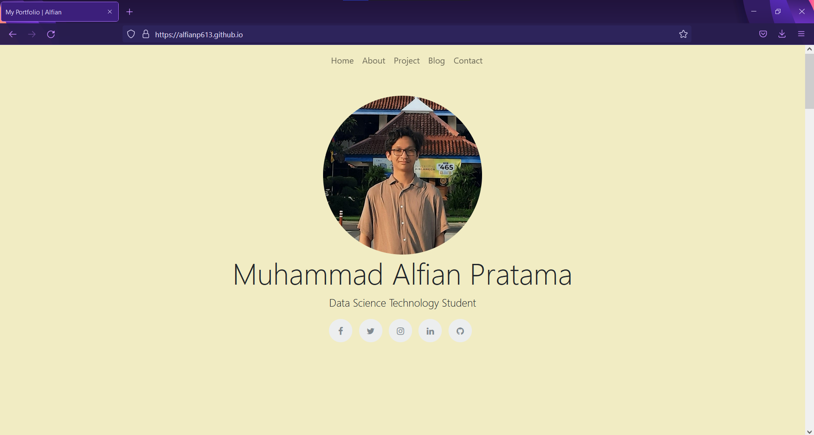
Penulis: Muhammad Alfian Pratama
Sumber: